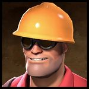
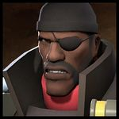

Heavy
 The Heavy is the largest and arguably most dangerous class in Team Fortress 2 - boasting the most base health, combined with the devastating firepower of his trusty Minigun. This weapon can inflict huge damage at a very high rate of fire, allowing him to mow down opposing babies, cowards, and teeny-men in mere seconds.
The Heavy is the largest and arguably most dangerous class in Team Fortress 2 - boasting the most base health, combined with the devastating firepower of his trusty Minigun. This weapon can inflict huge damage at a very high rate of fire, allowing him to mow down opposing babies, cowards, and teeny-men in mere seconds.
Engineer

The Engineer is a soft-spoken, amiable Texan from Bee Cave, Texas, USA with an interest in all mechanical things. He specializes in constructing and maintaining Buildings that provide support to his team, rather than fighting at the front lines, making him the most suitable for defense
Demoman

The Demoman is a self-described black Scottish cyclops and a scrumpy-swilling demolitions expert from Ullapool, Scotland, who is one of the most versatile members of the team. A master of explosives, the Demoman strategically deals massive amounts of indirect and mid-range splash damage.